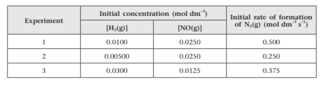

2021-10-16
Question 1
The following reaction takes place at 750 °C in a closed container with a fixed volume.
2H2(g) + 2NO(g) --> 2H2O(g) + N2(g)
a) Suggest an experimental method that can be used to follow the concentration of N2(g) in the reaction mixture. Briefly explain the principle of your suggested method.
b) The table below lists three sets of experimental data of the reaction at 750 °C.
Deduce the rate equation for the reaction, and calculate its rate constant at 750 °C.
c) Initially, 0.3g of NO and 0.1g of H2 is injected into a closed system of size 0.2 dm3. Calculate the rate of formation of water vapor:
(Assume the activation energy of the reaction = 30 kJ/mol)
i) at 750 °C.
ii) at 250 °C.